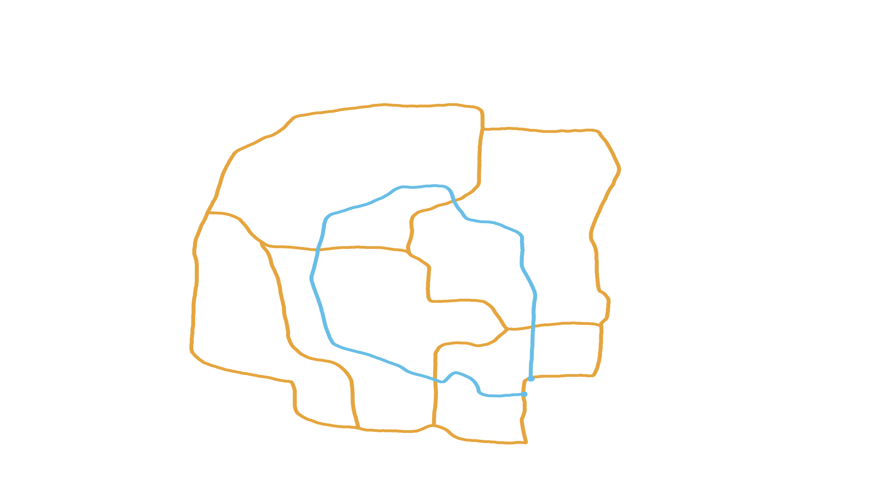

En halloweenoplevelse I sent vil glemme
Mellem skovens træer gemmer sig spor, som kun de opmærksomme finder. Saml holdet og bevæg jer ind i mørket. Find de skjulte ledetråde og løs gåderne sammen. Hver løsning bringer jer tættere på udgangen. I har 90 minutter... Undslipper I mørket?
Swipe og se flere billeder fra 2026
Samarbejd 2–8 personer
Kom med vennerne · større grupper deles.
Uret tæller ned: 90 minutter
Afsæt cirka 1½–2 timer til besøget.
Find spor og løs gåder
Find og løs de skjulte ledetråde.
KORT, OVERBLIK OG SAFEZONER
Ruten er ca. 2 km og spækket med opgaver
Ledetråde og safezoner langs ruten
Mørket kan godt blive intenst. Derfor er der indrettet safezoner med siddepladser, hvor man kan hvile benene, trække vejret og samle sig efter behov.
Safezoner: 3 safezoner ca. hver 600 meter
På ruten finder I otte ledetråde — to på hver strækning mellem start, safezonerne og slut.
Kortet giver et overblik over ruten. Den blå rute har tre cirkelformede safezone-markører. De orange linjer viser andre stier i skoven.

- Rute
- Safezoner
- Andre stier i skoven